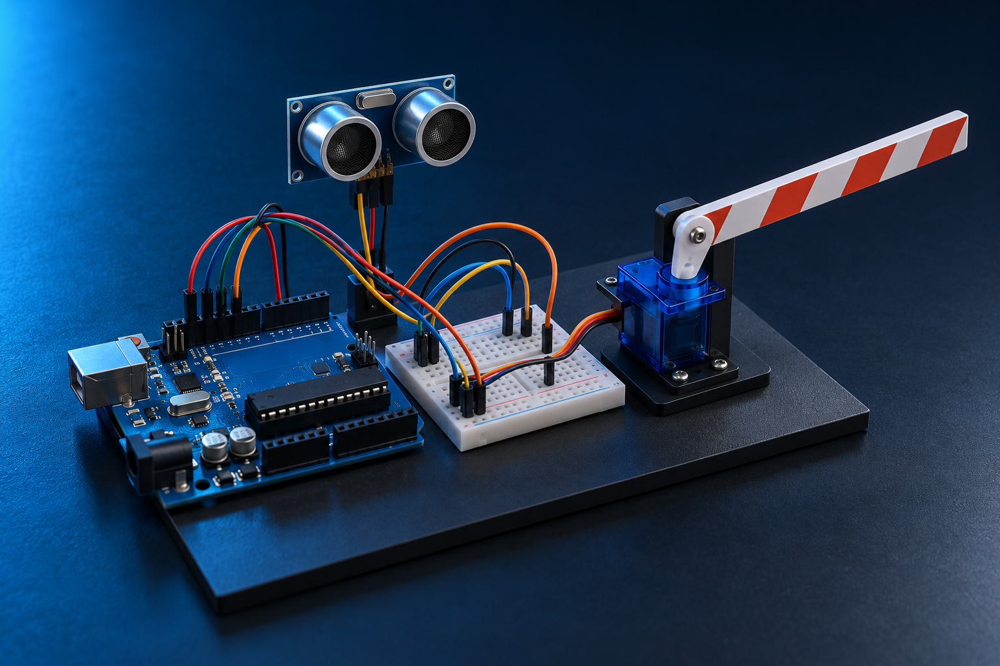
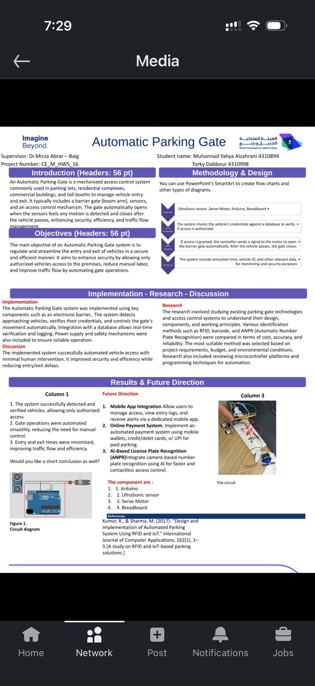

An approach is detected
Move the model barrier to the open position, then return it after passage.
ENGINEERING PORTFOLIO / PROJECT 03
A small working model that detects an approach and moves a parking barrier automatically.
Explore the project
FEATURED PROJECT
Academic prototypeA barrier that reacts to an approaching vehicle.
The problem: a manually operated parking barrier needs someone to open and close it each time.
What I did: built a small working model that measures distance, detects an approaching object, and moves a barrier using a motor.
Why it matters: it demonstrates how sensing and simple control rules can automate a repeated task. Identifying who is allowed to enter is a separate step for a complete system.
Conceptual control flow of the implemented prototype.
IN PRACTICE
A sensor notices an approaching object. A small controller decides when to move the barrier.
The sensor measures distance and sends the reading to the controller.
Move the model barrier to the open position, then return it after passage.
Keep waiting and check the next distance reading.
Prototype behavior only. A real facility also needs vehicle authorization and safety controls.
SKILLS I DEVELOPED
Connecting an ultrasonic sensor, Arduino controller, and servo in one working prototype.
Turning a distance reading into a simple decision and a barrier movement.
Checking the interaction between detection, control, and physical movement.
Evaluating identification alternatives by cost, accuracy, and feasibility, and documenting the prototype.
01 / BUILD
Four core components.
One integrated control loop.
Reads the sensor input and runs the gate-control logic.
Detects an approaching vehicle by measuring distance.
Moves the prototype barrier in response to controller commands.
Connects components for assembly, experimentation, and testing.
OPERATING SEQUENCE
The sequence below illustrates the intended gate cycle. It is a conceptual explanation, not a live connection to the hardware.
The ultrasonic sensor supplies distance readings.
The Arduino evaluates the detection condition.
A servo command moves the gate to the open position.
The barrier closes after the vehicle passes, ready for the next approach.
02 / ENGINEERING DECISIONS
The working prototype focused on sensing and barrier automation. Vehicle identification methods were explored as research alternatives, comparing cost, accuracy, and implementation feasibility.
Tag-based identification for registered vehicles.
ConsiderationsReader and tag costs, read range, and credential management.
Optical verification of an issued code or pass.
ConsiderationsCode visibility, scanner positioning, and the scanning workflow.
Camera-based recognition of vehicle number plates.
ConsiderationsLighting, image quality, recognition accuracy, and processing needs.
03 / PROJECT RECORD
The project poster includes the prototype photograph and circuit diagram, together with its objectives, methodology, and proposed future directions.
View original poster
04 / NEXT ITERATION
Manage access, review entry logs, and receive notifications.
Explore digital payments for a paid-parking workflow.
Investigate camera-based identification for contactless access.
Proposed future directions, rather than completed functionality.